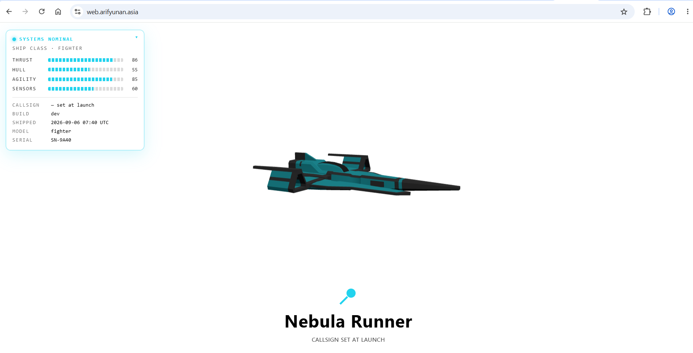
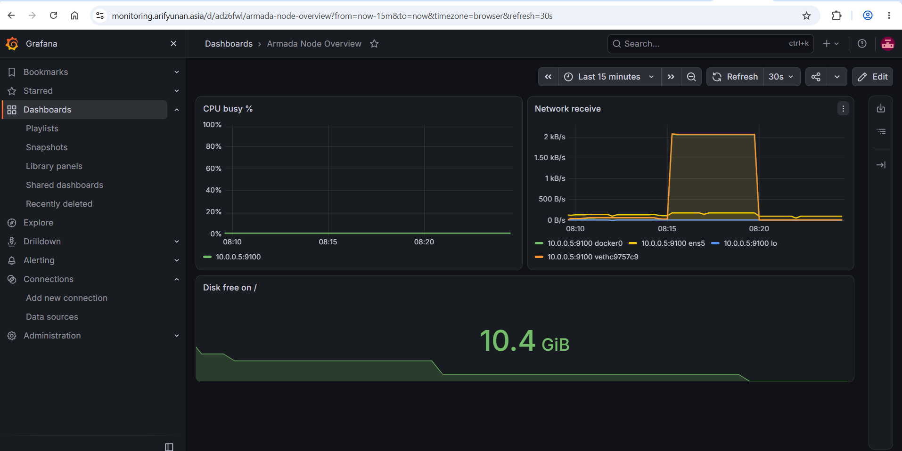

End-to-end DevOps bootcamp project that provisions AWS infrastructure with Terraform, configures services with Ansible, builds the Ship web application into a Docker image, publishes that image to Amazon ECR, and deploys it to an EC2 web server. A separate monitoring stack (Prometheus + Grafana) runs on its own server and is exposed through a Cloudflare Tunnel. Repository documentation is automatically synchronized to a GitHub Pages site using GitHub Actions.
URLs
| Service | URL |
|---|---|
| Application | https://web.arifyunan.asia |
| Documentation site | https://documentation.arifyunan.asia |
| Source repository | ArifoYunano/devops-bootcamp-project |
| Monitoring (Grafana) | https://monitoring.arifyunan.asia |
| Monitoring (Prometheus) | https://prometheus.arifyunan.asia |
Repository Layout
The repository is organized as a monorepo. It contains the web application, automation, infrastructure-as-code, and documentation tooling in one place.
| Path | Purpose |
|---|---|
app/ |
Ship application source code, Dockerfile, and .dockerignore |
ansible/ |
Inventory, Ansible configuration, and server deployment playbooks |
terraform/ |
AWS infrastructure-as-code files |
scripts/sync-docs.mjs |
Synchronizes README.md and the root index.html documentation site |
package.json |
Root Node.js tooling for the documentation sync command |
.github/workflows/commit-pipeline.yml |
Synchronizes documentation after documentation changes are pushed |
.github/workflows/static.yml |
Deploys the root index.html to GitHub Pages |
index.html |
GitHub Pages entry point generated from this README |
.
├── .github/
│ └── workflows/
│ ├── commit-pipeline.yml
│ └── static.yml
├── ansible/
├── app/
│ ├── Dockerfile
│ ├── .dockerignore
│ ├── package.json
│ ├── public/
│ ├── scripts/
│ └── src/
├── terraform/
├── .gitignore
├── index.html
├── package.json
└── README.md
Architecture
The deployment pipeline moves the application through source control, containerization, a private container registry, configuration management, and public DNS. Monitoring runs as a separate path via Cloudflare Tunnel rather than public inbound ports.
GitHub repository
|
v
Ansible controller (10.0.0.135)
- builds Docker image
- pushes image to Amazon ECR
|
v
Amazon ECR private repository
296766961942.dkr.ecr.ap-southeast-1.amazonaws.com/
devops-bootcamp/final-project-arifyunan:v1
|
v
Web EC2 server (10.0.0.5)
- Ansible pulls image from ECR
- Docker runs Nginx container on port 80
|
v
Cloudflare DNS (proxied A record)
web.arifyunan.asia
|
v
Public Ship application
Monitoring server (10.0.0.136)
- Prometheus + Grafana via Docker Compose
- Node Exporter target: web server (10.0.0.5), via exporters group
|
v
cloudflared (Cloudflare Tunnel)
|
v
monitoring.arifyunan.asia (Grafana)
prometheus.arifyunan.asia (Prometheus)
Infrastructure nodes
| Node | Private IP | Role |
|---|---|---|
| Ansible controller | 10.0.0.135 | Builds and publishes the application image; runs Ansible playbooks |
| Web server | 10.0.0.5 | Pulls the ECR image and serves the application container on port 80; also a Node Exporter target |
| Monitoring server | 10.0.0.136 | Hosts Prometheus, Grafana, and the Cloudflare Tunnel |
All infrastructure is deployed in AWS region ap-southeast-1, inside a single VPC (10.0.0.0/24) with a public subnet (10.0.0.0/25) and a private subnet (10.0.0.128/25) connected via a single NAT gateway.
Quickstart
Clone the repository:
git clone https://github.com/ArifoYunano/devops-bootcamp-project.git
cd devops-bootcamp-project
Provision or update AWS infrastructure using Terraform:
cd terraform
terraform init
terraform plan
terraform apply
Run Ansible from the controller to deploy the web image:
cd ../ansible
ansible-playbook playbook-web.yaml
Verify that the web server responds from inside the VPC:
curl -I http://10.0.0.5/
Expected result:
HTTP/1.1 200 OK
Terraform
Terraform defines the AWS infrastructure used by the project.
- Backend: S3, with native state locking (
use_lockfile = true) - Modules:
terraform-aws-modules/vpc/awsandterraform-aws-modules/ec2-instance/aws - Key pair: existing
arifyunan-keypair - Provider:
hashicorp/aws ~> 6.58, Terraform>= 1.15
Typical Terraform responsibilities
- Create the VPC, subnets, route tables, NAT connectivity, and security groups
- Create EC2 instances for the controller, web server, and monitoring stack
- Associate the shared
EC2-SSM-RoleIAM role (SSM access + ECR push/pull viaAmazonEC2ContainerRegistryPowerUser) across all three instances - Configure inbound rules required by the deployment
- Generate
inventory.inifrom instance IPs via atemplatefile()resource
Security requirements
| Protocol | Port | Source | Reason |
|---|---|---|---|
| TCP | 80 | 0.0.0.0/0 | Public HTTP access to the Nginx container (web server) |
| TCP | 22 | VPC only | Administrative SSH |
| TCP | 9100 | Monitoring server only | Node Exporter scraping |
Prometheus (9090) and Grafana (3000) are not exposed via public security group rules — they're reached exclusively through the Cloudflare Tunnel running on the monitoring server, so no inbound ports need to be opened for them at all.
Do not commit Terraform state, plans, .terraform/, private keys, or secret variable files. They are excluded through .gitignore.
Ansible
Ansible configures the servers after infrastructure is available.
Inventory groups
[web]
10.0.0.5
[monitoring]
10.0.0.136
[exporters]
10.0.0.5
A host can belong to more than one group. The web server belongs to both web and exporters because it runs the application and is also a monitoring target.
Web deployment
ansible/playbook-web.yaml deploys the web application. Its main tasks are:
- Ensure Docker is running and enabled
- Install AWS CLI v2 if missing (via the official installer, not the distro package — the Ubuntu AMI used here doesn't have the
universerepo component enabled, soapt install awscliisn't resolvable) - Authenticate Docker to private Amazon ECR
- Stop the older Docker Compose Nginx stack if present
- Remove the previous web container
- Pull the selected ECR image
- Run the new web container with
80:80port publishing - Verify the container serves HTTP 200 locally on the web server
Run the deployment:
cd ansible
ansible-playbook playbook-web.yaml
Check the running container:
ansible web -m ansible.builtin.command -a "docker ps" -b
Expected port mapping:
0.0.0.0:80->80/tcp
Monitoring stack
ansible/playbook-stack.yaml deploys Prometheus and Grafana to the monitoring server via Docker Compose (using the geerlingguy.docker Galaxy role) and copies the Cloudflare Tunnel token needed by cloudflared. ansible/playbook-exporter.yaml installs Node Exporter on the exporters group (currently just the web server) using the prometheus.prometheus Galaxy collection.
Application
The application is Ship, a Vite-based web application using Three.js. The upstream source lives at Infratify/ship and is vendored into this repo under app/.
Application commands
Run these commands from the application directory:
cd app
npm ci
npm run dev
npm test
npm run build
npm run preview
| Command | Purpose |
|---|---|
npm ci |
Install exact dependency versions from package-lock.json |
npm run dev |
Start the Vite development server |
npm test |
Run the application preflight check (validates ship.config.json) |
npm run build |
Generate production files in dist/ |
npm run preview |
Serve the built application locally for validation |
Docker image
The application uses a multi-stage Docker build.
- The Node.js build stage installs dependencies using
npm ci - Vite generates optimized static files with
npm run build - The Nginx runtime stage copies only
dist/and serves it on port 80
FROM node:20-alpine AS build
WORKDIR /app
COPY package.json package-lock.json ./
RUN npm ci
COPY . .
RUN npm run build
FROM nginx:alpine
COPY --from=build /app/dist /usr/share/nginx/html
EXPOSE 80
CMD ["nginx", "-g", "daemon off;"]
Build and push the image directly from the Ansible controller (it already carries an IAM role with ECR permissions, so no local AWS credentials are needed):
cd ~/app # or wherever the app/ source is checked out on the controller
aws ecr get-login-password --region ap-southeast-1 \
| sudo docker login --username AWS --password-stdin 296766961942.dkr.ecr.ap-southeast-1.amazonaws.com
sudo docker build -t 296766961942.dkr.ecr.ap-southeast-1.amazonaws.com/devops-bootcamp/final-project-arifyunan:v1 .
sudo docker push 296766961942.dkr.ecr.ap-southeast-1.amazonaws.com/devops-bootcamp/final-project-arifyunan:v1
Amazon ECR
The container image is stored in private Amazon ECR.
- Registry:
296766961942.dkr.ecr.ap-southeast-1.amazonaws.com - Repository:
devops-bootcamp/final-project-arifyunan - Tag:
v1 - Full image URI:
296766961942.dkr.ecr.ap-southeast-1.amazonaws.com/devops-bootcamp/final-project-arifyunan:v1
IAM permissions
A single IAM role, EC2-SSM-Role, is shared across all three instances (originally created for SSM access). It has AmazonEC2ContainerRegistryPowerUser attached, which covers both the controller's push permissions and the web server's pull permissions:
Sharing one role across all three instances is a deliberate simplification for a personal project — it means the monitoring server also technically has ECR access it doesn't need, in exchange for not maintaining separate roles.
Cloudflare DNS
The web application runs on the EC2 web server but is exposed using Cloudflare DNS.
An A record in the arifyunan.asia Cloudflare zone:
| Field | Value |
|---|---|
| Type | A |
| Name | web |
| Content | Public IPv4 address (Elastic IP) of the web EC2 instance |
| Proxy status | Proxied (orange cloud) |
| TTL | Auto |
Do not use the private IP 10.0.0.5 in Cloudflare — it must point to the instance's public Elastic IP.
SSL/TLS mode: set to Flexible, since the origin Nginx container only serves plain HTTP on port 80 (no certificate configured on the instance itself). Flexible lets Cloudflare terminate HTTPS at the edge for visitors while still connecting to the origin over HTTP.
Verify the published application:
curl -I https://web.arifyunan.asia
Monitoring
The monitoring server (10.0.0.136) runs Prometheus and Grafana via Docker Compose. Node Exporter targets only the web server, through the exporters Ansible group.
Unlike the web application, monitoring is not exposed via a Cloudflare DNS A record pointing at a public IP — instead, cloudflared (Cloudflare Tunnel) runs alongside the stack and creates outbound-only connections to Cloudflare's edge, so no inbound ports need to be opened on the monitoring server's security group at all.
- Grafana: https://monitoring.arifyunan.asia
- Prometheus: https://prometheus.arifyunan.asia
CI/CD
Two GitHub Actions workflows live under .github/workflows/.
| Workflow | Purpose |
|---|---|
commit-pipeline.yml |
Synchronizes README.md and root index.html, auto-committing generated documentation changes as github-actions[bot] |
static.yml |
Deploys the root static site to GitHub Pages |
Documentation sync
scripts/sync-docs.mjs keeps README.md and index.html aligned. commit-pipeline.yml runs it (npm ci then npm run sync:docs -- --write) whenever README.md, scripts/sync-docs.mjs, package.json, or package-lock.json change on main, and commits the regenerated index.html if it differs. A guard (if: github.actor != 'github-actions[bot]') prevents the bot's own commits from re-triggering the sync job.
Run the sync locally from the repository root:
npm install
npm run sync:docs # dry run
npm run sync:docs -- --write # writes the generated result to disk
GitHub Pages
GitHub Pages is configured with:
Repository Settings -> Pages -> Build and deployment -> Source: GitHub Actions
static.yml triggers on pushes that touch index.html (including the bot's own commits from commit-pipeline.yml) or via manual workflow_dispatch, builds the Pages artifact with actions/configure-pages + actions/upload-pages-artifact, and deploys with actions/deploy-pages. The site publishes at:
https://arifoyunano.github.io/devops-bootcamp-project/
CI/CD validation
To test the complete documentation pipeline:
nano README.md
npm run sync:docs -- --write
git add README.md index.html
git commit -m "docs: update deployment documentation"
git push origin main
After the push:
Docs Sync(commit-pipeline.yml) runs and synchronizes the documentation files- If
index.htmlchanged,github-actions[bot]creates a commit containing the generated changes Deploy static site to GitHub Pages(static.yml) picks up that change and publishes the updatedindex.html- The GitHub Pages documentation site reflects the latest README content
Security Notes
The following must never be committed to GitHub:
- AWS credentials and access keys
- GitHub personal access tokens
- SSH private keys,
.pem, and.keyfiles .envfiles containing secrets- Terraform state files and plans
- Ansible vault passwords or secret variable files
The root .gitignore excludes common sensitive and generated files, including node_modules/, dist/, .terraform/, *.tfstate, *.tfvars, .env*, keys, and credentials.
Result

Web App

Grafana
Project Status
- Application built with Vite
- Multi-stage Docker image built with Node.js and Nginx
- Image pushed to private Amazon ECR
- Ansible pulls the ECR image on the web server
- Docker container serves the application on port 80
- HTTP verification returned 200 OK
- Cloudflare record exposes web.arifyunan.asia (with Flexible SSL)
- Cloudflare Tunnel exposes the monitoring stack (Grafana + Prometheus)
- Documentation sync workflow is active
- GitHub Pages deployment workflow is active